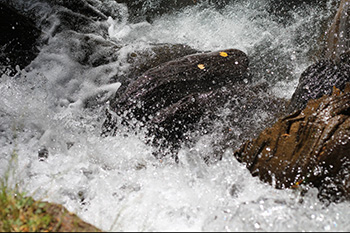
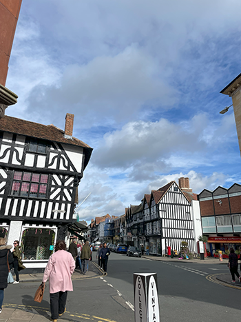
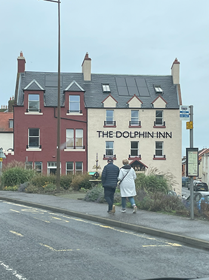
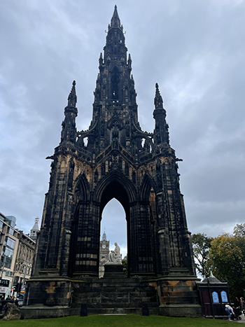

My Work






Alena Pearson is a first year Lethbridge Polytechnic student in the Multimedia Production program. She is entering into the program excited to learn more about graphic design and photography. As the program has gone more in depth, she has discovered that she really enjoys coding. Alena has found interest in this program through high school. Alena had taken a business class every year of high school life but as she went further and more into business, she wanted to learn more about how to make a website and how to do the graphics for starting a small business.
Before Alena moved to Lethbridge, she was very familiar with the Canadian Cancer Society as she has been volunteering and participating in the annual relay for life fundraiser since she was 7 as well as the CIBC run for the cure. In Alena’s personal life she tries to get outside and out of town as much as she can as she likes to hike and swim in the summer, during the winter she likes to ski and go on colder hikes.
Alena also has a passion for music. Her favorite type of music is folk. She has been going to concerts from a young age with her mom who loves music just as much as she does. Alena found the passion to go into this program because of her mom who has always been good at anything with art. Her mom has been the person she looks up to the most because of how she is able to do the most unique drawing and always have them come out perfect. Alena hopes to one day be a graphic designer in marketing near Vancouver.
Alena's passions in her work are graphic design, photography, and writing. She has decided to go into the field with graphic design. In Alena’s personal life, she tries to get outside and out of town as much as she can as she likes to hike and swim in the summer, then during the winter, she likes to ski and go on some colder hikes. Alena also has a passion for music. Her favorite type of music is folks. She has been going to concerts from a young age with her mom who loves music just as much as she does. She also like to work with friend and family with her photography